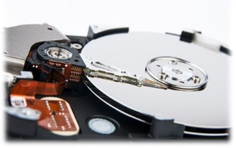
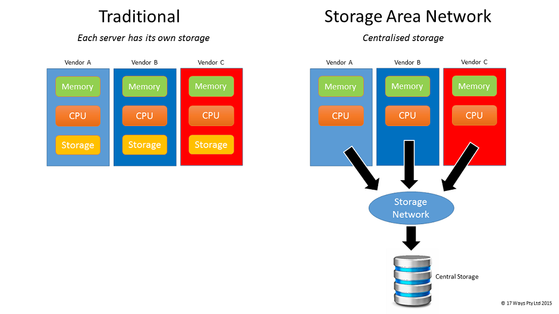

Data Centres are currently receiving a lot of negative press. They are viewed as outdated and unnecessary by many companies who are now embracing the Cloud as the answer to their technology infrastructure requirements. (See An Introduction to Cloud Computing for more information on the Cloud). At 17 Ways we believe that Data Centres will continue to be a core component of corporate IT for many years to come and that it is essential that any medium to large scale company has a cohesive strategy around Data Centre evolution. To understand why we take this view, we would like to take you on a quick history tour of the Data Centre and to look at its role within the corporate world.
In Cloud vs Converged we compare cloud computing to the traditional Data Centre technology described here.
A Data Centre is just a specialised room for storing computer equipment. The room itself is only a small part of the cost with the equipment and the management costs making up the bulk of the expense of running a Data Centre. Data Centres are needed to protect a companies critical IT infrastructure (servers and network equipment) from irregularity in temperature or power and from accidental and unintended interference by humans. Data Centres offer a controlled environment which helps to minimise environmental and human error.
Personal computers have never had that kind of treatment and have to cope in the real world and we will talk more about them in a while, but server technology traditionally lives in a Data Centre. When we say server technology we are referring to the computers that run the backend processing for applications. When you run an application on your PC at your desk, typically it will connect to a number of servers in a data centre. These servers are running things like databases (which keep all of the critical data), processing (components that updates that data and produces reports for example), and security services (to control who can access what data).
The Data Centre is the Fort Knox of the technology department. It is where all of the critical computers and networking equipment are kept.
By the 90’s the Data Centre was a large room with a diverse range of equipment from different vendors. Data Centres were (and still are) expensive to run. They need a constant temperature, backup power supplies and secured access. Systems from different vendors didn’t generally interoperate, leading to duplication and “islands of technology”. So if you had a spare component like a CD-ROM or a memory chip then you couldn't use that in any of the other equipment in your Data Centre.
Within a Data Centre the different computers lived in specialised racks with whole rows of racks being dedicated to different vendor’s technologies. There was little standardisation and vendors typically built most of their hardware themselves rather than using other people’s parts. While this led to healthy competition, most of the hardware arms race was only delivering small, incremental change.
The real revolutionary change was happening outside the Data Centre.
The brain of a computer is the Central Processing Unit (CPU). During the 90’s hardware vendors such as Sun, IBM and HP were building there own CPUs while PC manufacturers were using the Intel x86 chips (or clones from companies such as AMD). It is a lot cheaper to buy a CPU than to build one and the volume of PC sales drove down the production costs. This meant that PCs became very much cheaper alternatives to traditional Data Centre hardware, and throughout the 90’s another island of technology was growing inside the Data Centre as more serious systems were being developed for PCs. The PC Server became a reality, despite being an oxymoron.
Standardising on x86 CPUs allowed software to run on more machines.
At the same time a movement called Open Source was gaining momentum. Each different type of CPU required different software to be developed to run on it. However with the increase in the use of x86 processors there were suddenly a lot of different computers that could run the same software.
If you spent a lot of time developing software then you typically wanted to keep that private to protect your IP, however a lot of people were realising that there was more P than I in the software that they were developing to do non-core activities. For example, if you are an insurance company then you care a lot about your claims handling systems but you don’t really care about the software that you use to book meeting rooms. Rather than build this stuff from scratch within each organisation or buy that software from a vendor, the alternative was for everyone to share it. The technology industry which underpins banks and multi-nationals might seem like a strange place for socialism to start but that is exactly what happened. Starting with low-level things like operating systems it spread quickly with people seeing a huge benefit in using Open Source software that anyone can use and update, but nobody owns.
We can't over emphasise what a difference Open Source has made to the IT Industry and the largest impacts have been seen inside the Data Centre. The development of cheap PCs put high powered computers in the hands of everyone and Open Source allowed anyone with the time and the inclination to learn, to become a software developer and to contribute their code to the Open Source world.
Put all of your eggs in a bombproof basket and guard it with your life
Meanwhile back in the Data Centre of the 90’s and early noughties the number of servers continued to grow. These systems were not Open Source and most of them were running their own CPUs. About the only thing that the manufactures of these computers agreed on was disk technology. This is the medium that they use to store information, exactly like the storage in a laptop or iPhone.
Because this stuff was low level and not a big differentiator, the hardware vendors were more influenced by standards and Open Source, which meant that this technology could actually be shared. And if it can be shared then it doesn’t even need to be inside the same box. This led to the emergence of companies selling Data Centre storage systems. The hard drives effectively disappeared from the servers and became shared, with the data physically living on a new box in the corner of the Data Centre. Not only did this reduce cost by pooling all of the space requirements but it helped with disaster recovery as now only one system in the Data Centre needed to worry about copying data somewhere else instead of every system doing its own thing.
This is a good point to stop and have a look at what is in a typical Data Centre a few years ago.
You enter a Data Centre through a security check. Nobody gets in without a valid reason and appropriate approvals. Once inside you will find it incredibly noisy. Most of this is due to fans inside the computers and air conditioning. At one end of the large room there will be some big white boxes. These are the air conditioners and power management systems. They make sure that the humidity, temperature and power remain constant.
The floor you stand on is raised. Underneath you are literally kilometres of cables connecting everything together. Probably in the middle of the room are a number of huge metal boxes. These are the storage systems. The rest of the room is full of computer racks, mostly identical. Down one side of the room are a series of racks labeled Networks and covering the rest of the room are racks contain computers with the name of the technology/team that looks after them.
One of the largest costs of the traditional Data Centre model is the need to run separate support teams for each of the technologies.
Up until now we have described a single Data Centre. In fact one of the issues that many companies face is a proliferation of Data Centres distributed around the world leading to multiplication of many of the costs. There is limited scale in having multiple Data Centres and issues like security, power and air conditioning need to be solved repeatedly in each new location with a different set of local providers and issues.
Even if you don't have a global problem there is still limited appeal in running your own Data Centre premises. Typically a Data Centre would be located in the same building as the staff, occupying expensive real estate and often located in the basement and at risk of flooding. The systems and people that you need to operate the Data Centre physical environment are above and beyond what you need for the rest of the building, so again there is no real scale factor in running your own Data Centre.
The answer to both of these problems is the same. Use a specialist Data Centre company to run your Data Centre space for you. They have the economy of scale and you can focus on the machines inside the Data Centre and not worry about the room itself. It can also be located away from your staff which is better for Disaster Recovery and cheaper. Many organisations use Data Centre providers to host their servers with the providers giving them a space in a large Data Centre with guaranteed power, humidity and temperature. An extra benefit is that often the Data Centre will also host some of the other companies that you need to connect to making it faster and easier to do business. Interestingly these are often the same physical Data Centres that the Cloud providers use. Meaning that whether you run something inside your own Data Centre or in the Cloud, it can actually be running in the same room.
Whether you outsource your Data Centre facilities or run them yourself, the same challenges apply to the servers that are in them.
In our Data Centre we notice something strange happening throughout the start of the 21st century. More and more hardware vendors are adopting x86 CPUs and standardising on Microsoft’s Windows operating system or the Open Source Linux operating system. Even Apple discards their own chips to use Intel’s x86 and an Open Source operating system very similar to Linux. Now the racks in the Data Centres are still full of different vendors hardware but under the covers these computers are very similar. The battle between the hardware vendors has moved away from the hardware itself and into how easy they can make it for you to run that hardware.
By 2010 the hardware arms race was over. Bigger, Faster, Better had given way to Easier and Cheaper.
As PC Servers developed, they got more and more powerful. These computers are not the simple PC that you have on your desk, they have many times more capacity. With all that power available in a single machine, and Data Centre space being expensive, it was only a matter of time before virtualisation became possible. Ignoring the noise from mainframe people shouting “We did that 50 years ago!” the PC Server software vendors re-invented the ability to run a number of “virtual machines” on a single physical machine. Instead of having several racks full of computers you could now have one computer that to everyone outside the Data Centre, looked like it was lots of computers.
If that seems confusing try thinking of it like this. Imagine you had only ever known houses. One day you find a block of units. It looks like a house, it has only one front door and one roof. When you are inside it feels like a house too, every unit has bedrooms and bathrooms and a kitchen. So from outside it looks like one house and from inside everyone in their own unit has their own individual home but the difference is that it takes up much less space and is overall cheaper than multiple houses.
Virtualisation is very important because it moves IT infrastructure away from the need to scale by adding boxes. Now you can scale your systems up or down without anyone needing to physically touch them (provided you have capacity). This reduces time to market and requires no long term commitment.
At the start of our story the Data Centre consisted of lots of completely different things from different vendors. Then we separated out the storage part and now those vendors have moved towards using the same x86 CPUs so now a lot of our servers are very similar to each other. We also have virtualisation so we have less servers. The data now sits on one box and the (virtual) server runs on another box. They are both connected over a network (all those cables under the floor and some clever network devices). What would your mum say if she saw this? “Why not put them all in one box?”. That is exactly what converged infrastructure is all about.
The next step in convergence is to put all of the equipment into a single physical box. This can be upgraded to add more storage or compute power and is faster because all the communication is internal and doesn't need to cross the cables under the floor.
The next generation of Data Centre infrastructure, called Converged Infrastructure, takes the compute power of the x86 servers, the network technology from those clever boxes and the storage and it puts them altogether along with the virtualisation technology and some software to manage it all. The mainframe guys think it is the 1960’s again but to everyone else it is new and it represents a massive step forward.
Again, if you are outside the Data Centre you can’t really tell the difference, except adding new servers or disk space is now incredibly fast and your costs for running the Data Centre are less.
The emergence of Converged Infrastructure is quite recent and very significant. It allows much more of the traditional infrastructure work to be done with software rather than hardware. Now you can add a server or extra disk space or memory with the click of a button. This is every Data Centre Manager's dream. Now you hardly ever need to do work inside the Data Centre which greatly reduces the chance of mistakes being made. Implementing Converged Infrastructure also comes with an organisational change aspect which is often overlooked. If you remember before, we had multiple teams running the technologies; as a minimum there was a network team, a storage team and a server team. Now everything is in a single box with a single set of management tools and it is important for any organisation that implements Converged Hardware to also change their operating structure to match the new approach.
Converged Infrastructure leads to the Software-Defined Data Centre - the ability to make changes to your Data Centre without physically touching any hardware.
You may also come across the term Hyper-Converged. This is large a marketing term but usually means that all of the components in the device are built together. Typically Converged Infrastructure can be upgraded to add more storage or CPUs while Hyper-Converged Infrastructure is upgraded by adding more boxes.
We have seen the Data Centre evolve over time from a collection of very different hardware components from different manufacturers through to sharing of technologies and the adoption of x86 and Open Source, and finally to Converged Infrastructure with virtualisation and the Software-Defined Data Centre.
This is very significant change and much of it is still new and developing. Meanwhile Cloud Computing has been making major inroads to the areas where traditional Data Centre technology used to rule. Is Converged Infrastructure enough to save the Data Centre from extinction? When should you use Cloud and when should you use Converged? In Cloud vs Converged we go through the comparison and try to help you to make the right decisions. If you want some background on what Cloud Computing is you can also read our article An Introduction to Cloud Computing.